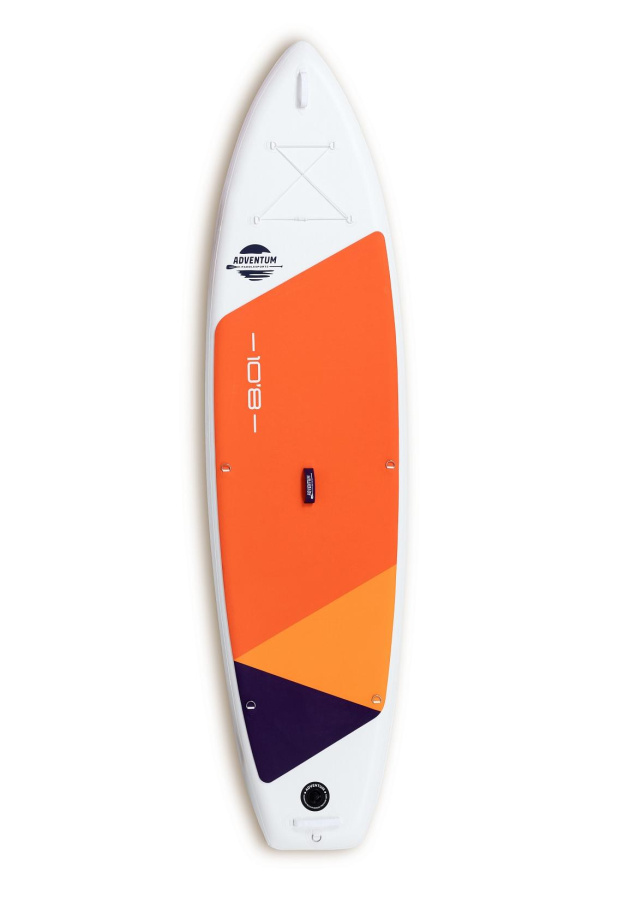

Доска для sup-бординга ADVENTUM Orange 10'8

Описание товара:
Яркая прогулочная доска для начинающих весом до 140 кг. Доска не нагревается на солнце за счет светлого дизайна.
В носовой части палубы расположена эффективная карго-система крепления для вещей и груза, которая позволит вам перевозить все свои вещи на доске и сплавляться с грузом.
Технология производства - Light tech - делает доски легкими и прочными: ПВХ на прочной текстильной основе плотностью 1000 den с технологией Light Tech и обеспечивает надежную основу под ногами. На такой доске удобно стоять, она не прогибается под ногами и легко скользит по воде, обеспечивая райдеру максимальную устойчивость и жесткость.
Наилучший вариант для начинающих. Учитывая легкий вес, доску могут самостоятельно переносить даже подростки.
Характеристики товара
| Длина: | 329,1 см |
| Ширина: | 86.3 см |
| Толщина: | 15 см |
| Вес: | 8 кг |
| Страна бренда: | Россия |
| Грузоподъемность: | 140 кг |
| Страна производства: | Китай |
| Год выпуска: | 2022 |
| Слои: | Двухслойная |
Гарантия
Гарантия на товар составляет 1 год
Данный товар не относится к программе SERVICE STAR.
Товар может быть возвращен в случаях, установленных Законом о защите прав потребителей, в порядке и в сроки, установленные указанным законом.
Коплектация
- Весло алюминий
- Страховочный лиш
- Сумка рюкзак
- Плавник US Box
- Насос двойного действия